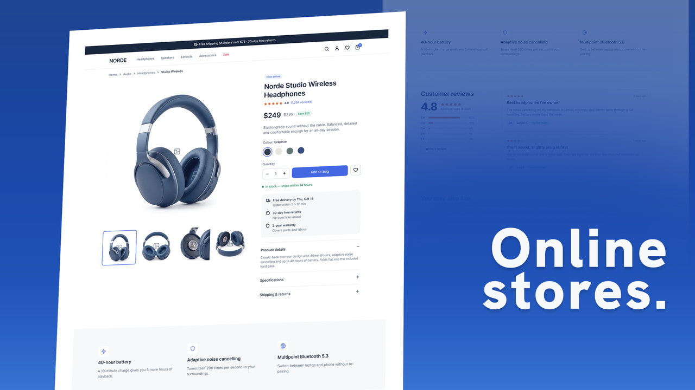

UI/UX design for websites and apps
Landing pages, online stores, mobile apps and sign-up flows that look considered and work the way people expect, designed in Figma and refined with you from a first draft to final screens.
Interfaces for products, stores and services.




Just the screens, or the whole experience.
UI design gives you the screens. UI/UX design adds the thinking behind them, tried out in a clickable prototype first.
Rates are in US dollars with no VAT added, and vary with scope, revisions, and turnaround. Send a brief and you'll have a real number within a day or two. UI/UX projects start with a draft prototype, so you can see the direction before you commit.
From a short call to final screens.
A short call
We go through what the site or app needs to do, who it's for, and any references you like.
A draft prototype
UI/UX projects start with a rough, clickable version of the key flow, so you can see the direction before you commit.
Design and revisions
The screens take shape in Figma and get refined together, with direct feedback instead of a long back-and-forth.
Final files
You get the finished screens in the formats agreed at the start, ready for whoever builds them.
Good to know before you get in touch.
What's the difference between UI design and UI/UX design?
UI design is the look of each screen: layout, type, colour and components. UI/UX design starts earlier, with how people move through the site or app, and tries that out in a clickable prototype before the screens are finished.
How much does UI/UX design cost?
UI design runs $1,500 – $3,000 and UI/UX design with a prototype $3,500 – $5,500, priced by the project rather than the hour. Where a project lands depends on the number of screens, revisions and turnaround.
Which tools do you design in?
Figma for interfaces and prototypes, with Photoshop for imagery.
Do you work with clients in the US?
Yes. Most of the work is for brands across the US, run by email and calls, with quick replies.
How long does a project take?
It depends on the number of screens and rounds of revisions. You'll hear back within a day or two of sending a brief, with next steps and a rough quote, and the timeline is agreed before work starts.
Have a site or app in mind?
Tell me what you're working on, and you'll hear back within a day or two with next steps and a rough quote.
Other services: Graphic design & GFX and Motion design.